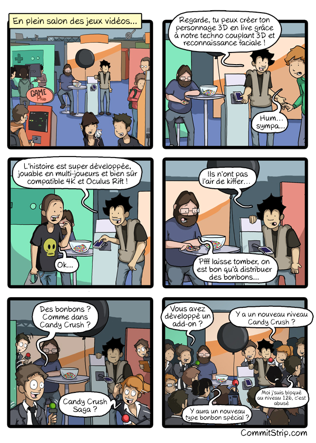

TP classes et manipulation d'objets
Lors de cette séance vous allez découvrir comment définir et manipuler des classes et des instances (objets).
Quelques explications
Classes, constructeurs
Nous avons vu lors des séances précédentes comment nous pouvons définir des classes en Java. Pour cela, ont été introduits les concepts de constructeurs (méthodes permettant d'instancier un objet) et d'attributs (données qui définissent les instances de cette classe). Pour rappel, les constructeurs portent nécessairement le nom de la classe, par exemple pour une classe Salle :
class Salle {
...
Salle() { ... } // constructeur par défault
Salle(int unNumero, ...) { ... } // constructeur paramétré
...
}
Attributs
Un attribut se déclare simplement à l'intérieur de la définition de la classe (mais en dehors de toute méthode), par exemple :
class Salle {
...
int numero;
boolean libreService;
...
}
Instantiation
On peut ensuite utiliser cette classe comme n'importe quel autre type, et ainsi instancier une classe, c'est-à-dire déclarer et initialiser une variable dont le type est cette classe. On utilise la notation pointée pour accéder à l'un des attributs d'une instance (un objet) :
Salle s = new Salle();
...
System.out.println(s.numero); // affiche le numéro de la salle s
Méthodes
Toutefois, les classes ne sont pas simplement des structures de données permettant de regrouper des données au sein d'une même entité. En effet, une autre manière de voir une classe est de la considérer comme un fournisseur de services : les attributs ne sont alors que les données nécessaires à la réalisation de ces services. Pour cela, nous pouvons définir des méthodes (fonctions définies à l'intérieur d'une classe).Méthode (et attribut) d'instance (non statique) ou de classe (statique)
On distingue les méthodes :- d'instance (= non statiques) : elles sont appliquées sur l'instance courante. On peut alors désigner cette instance avec le mot-clé "this".
- de classe (= statiques) : elles ne sont pas liées à une instance, mais à la classe. Ainsi, l'utilisation de "this" est interdite dans le corps de ces méthodes, ainsi que l'accès aux attributs non statiques.
class Salle {
...
int numero; // attribut d'instance
static int nombreDeSalles = 0; // attribut lié à la classe et non à une instance.
// Permet de compter combien de salles ont été
// instanciées
Salle() { // constructeur
...
nombreDeSalles++; // à chaque nouvelle instance, on incrémente
// nombreDeSalles
...
}
int numero() { // méthode d'instance : il s'agit du numéro d'une salle précise
return this.numero;
}
static int nombreDeSalles() { // méthode de classe : liée à la classe et non à
// une instance précise
return nombreDeSalles;
}
...
}
Demander à une instance d'exécuter une méthode d'instance se fait (tout comme pour les attributs) en utilisant la notation pointée. Pour une méthode de classe, on ne peut pas demander à une instance de l'exécuter. On utilise la notation NomDeLaClasse.methodeDeClasse() :
Salle s = new Salle();
...
System.out.println(s.numero()); // affiche le numéro de la salle s
System.out.println("Nombre de salles : " + Salle.nombreDeSalles());
// affiche le nombre de salles qui ont été instanciées.
Code fourni
Ouvrez tout d'abord le code qui vous est fourni. Vous y trouverez 6 fichiers :
- DistributeurFriandise.java : la fonction principale ainsi que tout le déroulement de l'application. Dans ce fichier, il faudra simplement décommenter certaines instructions lorsque vous voudrez exécuter le code que vous allez écrire.
- Bonbon.java : la définition de la classe Bonbon permettant de modéliser et de manipuler les bonbons.
- Distributeur.java : la définition de la classe Distributeur permettant de modéliser et de manipuler un distributeur de bonbons.
- Parfum.java : une énumération permettant de définir le parfum d'un bonbon. Vous n'aurez a priori pas à modifier ce fichier.
- BonbonTest.java : les tests unitaires de la classe Bonbon (dans Test Packages). Pour les lancer, faire un clic droit sur cette classe dans Projects, puis Run File.
- DistributeurTest.java : les tests unitaires de la classe Distributeur (dans Test Packages).
Énumérations
Une énumération est un type de donnée particulier dont une instance ne peut prendre que certaines valeurs, celles définies dans l'énumération. Par exemple, dans le fichier Parfum.java :
enum Parfum {
NOISETTE,
CARAMEL,
FRAISE,
POMME,
CHOCOLAT,
RIZ
}
Permet de définir une énumération Parfum dont chaque instance ne peut prendre qu'une valeur parmi NOISETTE, CARAMEL, ..., RIZ. Pour déclarer une variable :
Parfum p = Parfum.NOISETTE;
On peut aussi utiliser une énumération comme paramètre ou comme type de retour d'une fonction ou d'une méthode, par exemple dans Bonbon.java, static Parfum choixParfum().
Consigne
Dans la suite de cette séance, nous vous indiquerons si une méthode doit être statique ou non. Pour chacune des méthodes que vous implémenterez, justifier la définition d'une méthode de classe ou d'une méthode d'instance.
Fabrique à bonbons
Question 1
Lisez attentivement la classe Bonbon.
Afin de faciliter l'instanciation de Bonbon particulier mais aussi (d'une certaine manière) de garantir que les valeurs utilisées pour instancier les bonbons sont correctes, il peut être intéressant d'implémenter des méthodes statiques retournant des Bonbons particuliers.
Implémenter les méthodes statiques :
-
static Bonbon tigre()
qui retourne un bonbon ayant la dénomination "Tigre", un parfum CHOCOLAT, un poids de 45g et 228 calories. -
static Bonbon venus()
qui retourne un bonbon ayant la dénomination "Venus", un parfum CARAMEL, un poids de 45g et 228 calories. -
static Bonbon noisettes()
qui retourne un bonbon ayant la dénomination "Noisettes", un parfum NOISETTE, un poids de 50g et 250 calories. -
static Bonbon chypresers()
qui retourne un bonbon ayant la dénomination "Chypresers", un parfum RIZ, un poids de 55g et 242 calories. -
static Bonbon chewingGum(Parfum p)
qui retourne un bonbon ayant la dénomination "Chewing Gum", un parfum p, un poids de 10g et 52 calories.
Indiquez pour quelle raison ces méthodes sont définies comme statiques.
Décommentez dans DistributeurFriandise le contenu de la méthodestatic void ajouterBonbon(Distributeur d), exécutez.
Question 2
Dans la classe BonbonTest, écrivez les tests unitaires de ces méthodes en vous assurant que les objets ainsi instanciés ont les caractéristiques souhaitées.
Notez que pour tester l'égalité de deux nombres de type float, il faut indiquer le degré de précision de la comparaison. Cela donne, pour vérifier que c = a + b :float a = 1; float b = 3; float c = 4; assert Math.abs(c - (a + b)) < 0.01;
Classe Distributeur
Lisez attentivement le contenu de la classe Distributeur. Vous pouvez observer que, parmi les attributs d'instance, on trouve un tableau de Bonbon (contenu) qui permet de stocker l'ensemble des bonbons contenus dans le distributeur.
Question 1
- Écrivez le test unitaire de la méthode
boolean vide()
qui retourne true si le distributeur est vide et false sinon. - Écrivez le contenu de la méthode
boolean vide()
.
Question 2
-
Écrivez le test unitaire de la méthode
boolean plein()
qui retourne true si le distributeur est plein (i.e. le nombre de bonbons a atteint la capacité du distributeur) et false sinon. -
Écrivez le contenu de la méthode
boolean plein()
.
Question 3
Écrivez le contenu de la méthode
void afficher()qui affiche dans le terminal les caractéristiques du distributeur. Par exemple, si un distributeur contient un Tigre et un Venus alors affiche() produira : Ce distributeur contient 2 bonbons
Bonbon
Dénomination : Tigres
Parfum principal : CHOCOLAT
Poids : 45 Calories : 228
Bonbon
Dénomination : Venus
Parfum principal : CARAMEL
Poids : 45 Calories : 228
Question 4
-
Écrivez le test unitaire de la méthode
Bonbon retirerBonbon()
qui, s'il existe, retire un Bonbon du distributeur et le retourne, et sinon retourne null. -
Écrivez le contenu de la méthode
Bonbon retirerBonbon()
. -
Décommentez le contenu de
static void retirerBonbon(Distributeur d)
dans le fichier DistributeurFriandise et exécutez. - Pour quelle raison cette méthode est-elle statique ?
Question 5
-
Écrivez le test unitaire de la méthode
Bonbon[] retirerBonbons(int nombreBonbons)
qui, s'il en existe, retire nombreBonbons Bonbons du distributeur et retourne un tableau les contenant. -
Écrivez le contenu de la méthode
Bonbon[] retirerBonbons(int nombreBonbons)
.
-
Écrivez le test unitaire de la méthode
Bonbon[] retirerBonbons()
qui, s'il en existe, retire tous les Bonbons du distributeur et retourne un tableau les contenant. -
Écrivez le contenu de la méthode
Bonbon[] retirerBonbons()
. -
Décommentez le contenu de
static void retirerBonbons(Distributeur d)
dans le fichier DistributeurFriandise.java et exécutez.
Parce qu'un peu d'algorithmique fait toujours ...
On souhaite maintenant pouvoir dessiner le distributeur sous cette forme :
/-------\
| |
| |
| |
| |
|CCC |
|CCCCCCC|
\---c---/
où chaque caractère correspond à un bonbon du distributeur (un caractère par parfum).
Question 1
Implémenter la méthodevoid dessiner()de la classe Bonbon qui affiche un caractère différent en fonction du parfum du bonbon.
Question 2
Implémenter la méthodevoid dessiner()de la classe Distributeur qui dessine le distributeur dans le terminal.
Powered by w3.css